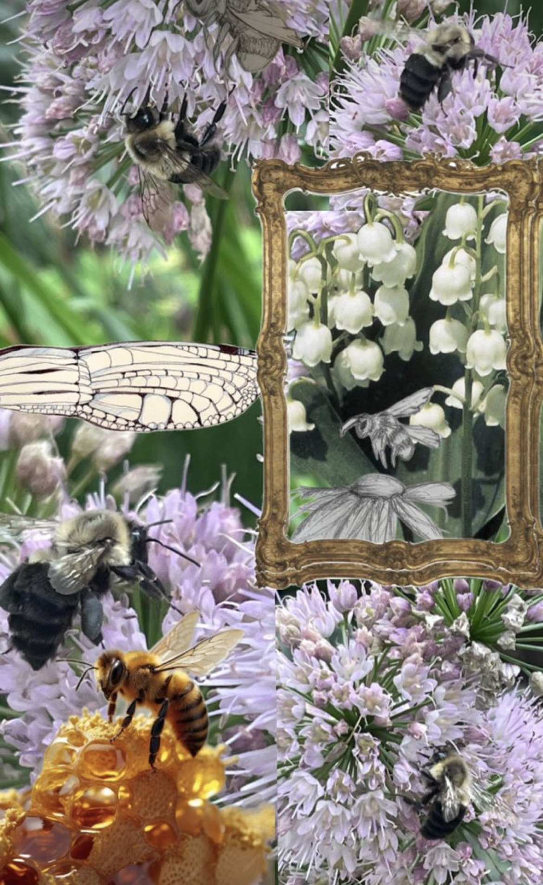
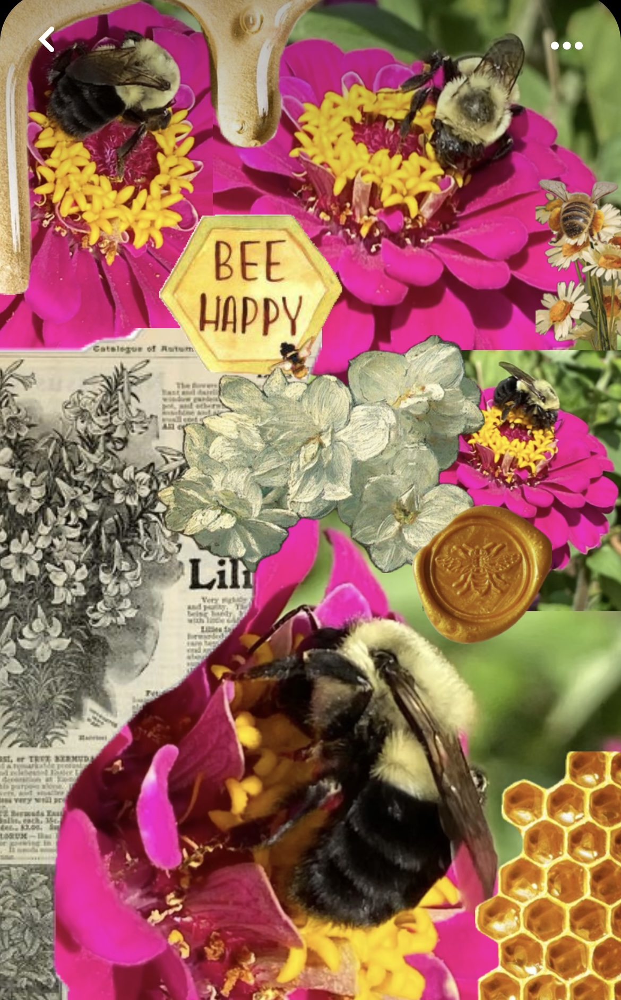
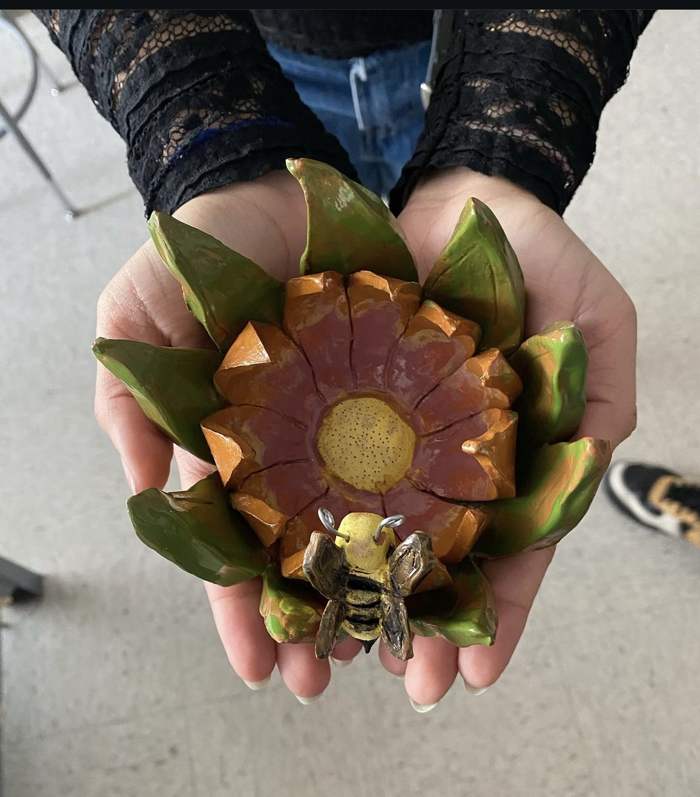
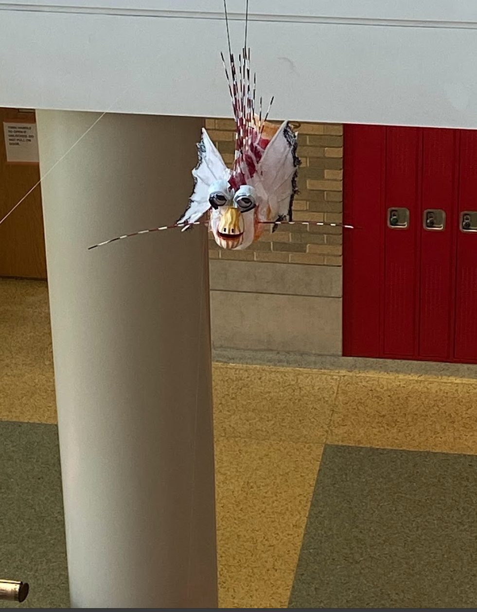
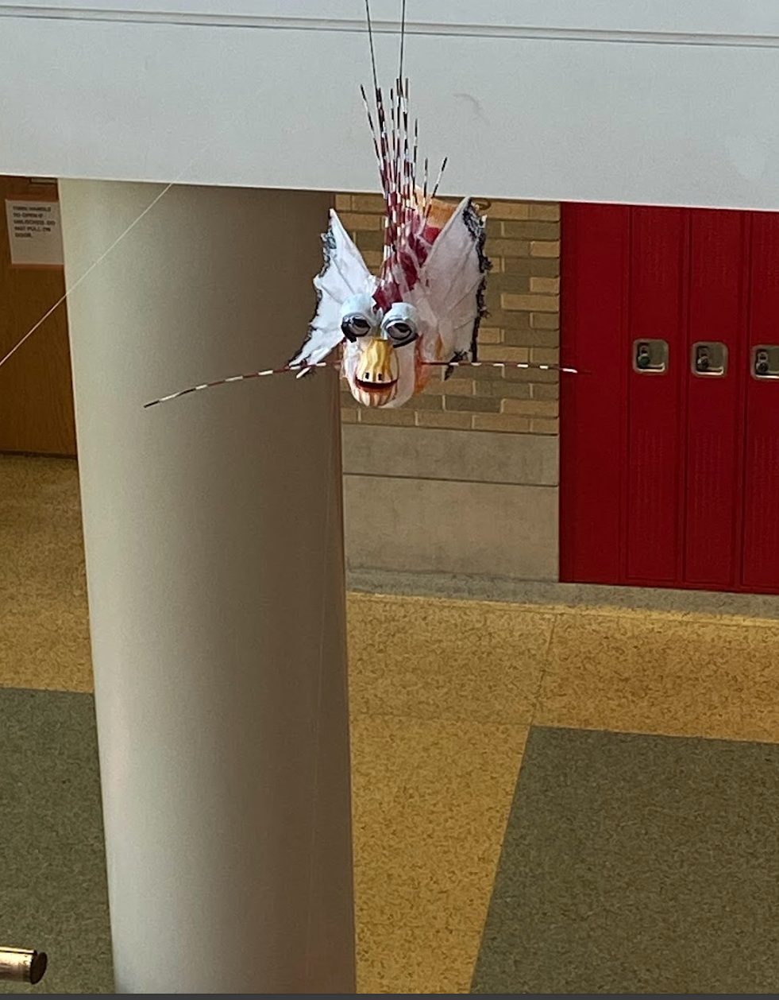
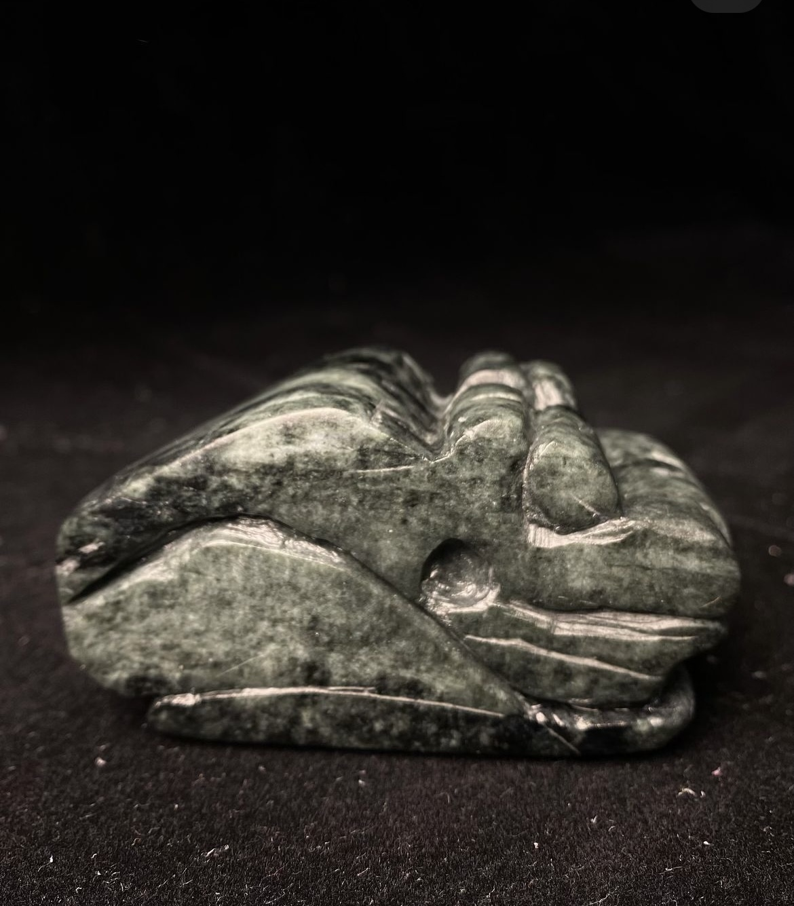
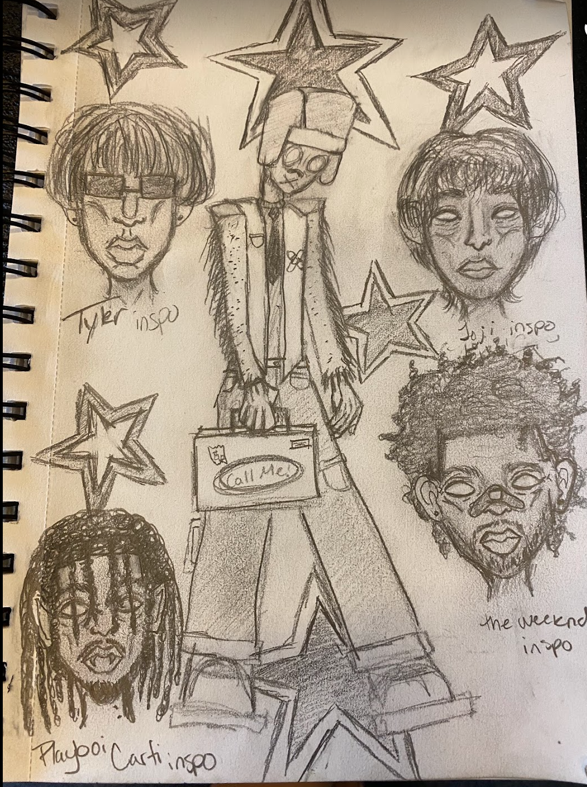
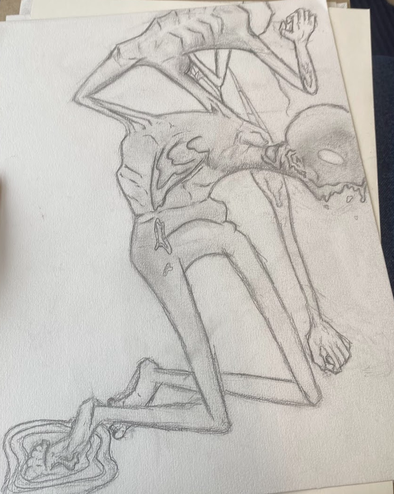
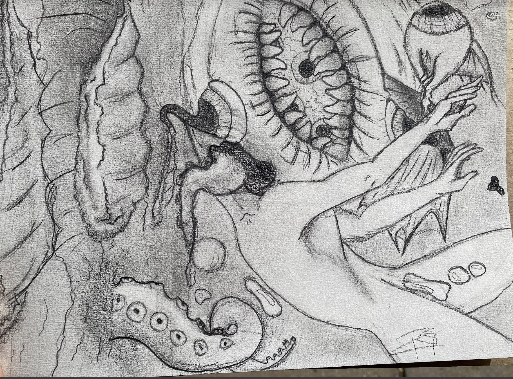

Bee Happy: Bee Pollination Collages
 These collages include pictures of bees pollinating, taken by myself. These collages group images of bees pollinating different flowers and areas, including imagery of other bees, exotic flowers, and the production of honey. Bees are something I have always been fond of, so I enjoy finding ways to incorporate bees into my art and bring awareness to others about insects like bees, which help our ecosystem.
Lotus Flower Pot: Bee at Peace
This image shows a sculpture I created during my senior year of high school. Our task was to create a flower pot that would be able to house and use a new plant. Being extremely inspired, I took the prompt and decided to create a literal flower pot that has the design of a lotus blossom. Here in this image, you can capture a quick peek at a bee sitting peacefully on a leaf of the lotus.
Ash Tray Full of Emotions

This image contains two different designs of ash trays. I had previously created a strawberry ash tray and decided to further my creativity by creating more reactive ash trays which include estranged facial features.
Plastic Lionfish
 

These images show a Lionfish sculpture created for a project highlighting the outcomes of plastic pollution in the ocean. This project aimed to bring awareness and prevent pollution by creating sea creatures from plastic that are endangered. The Lionfish is not yet endangered, but it contributes to the decline of other tropical fishes. Lionfish lack natural predators and reproduce hundreds of thousands of eggs each year, leading to their eventual extinction as their food source depletes.
Rana de Los Tainos

These are images of a sculpture meant to capture the essence of culture. This frog sculpture was carved over a few days, with each crevice carefully mapped out on paper before physical enactment. It aims to evoke an old Taino feel, reflecting the heritage of the first native people of Puerto Rico.
Drowning in a Sea of Thoughts
This sketch was inspired by multiple images, including an all-seeing eye and an oceanic all-seeing fish. It depicts a person falling from the sky into the depths of their thoughts, with surrounding creatures illustrating the chaos of the mind.
I'm Melting
This sketch draws inspiration from characters like Clay Face and Venom, portraying a biohazard melting away while a new clone emerges amidst toxic sludge.
Outskirts for Passion
This image features a fashion test dummy wearing an outfit inspired by Tyler the Creator. The sketches reflect various musical artists who also influence fashion, showcasing my favorite artists in my free time.
Materials Used
- Red Clay
- White Clay
- Clay sculpture carving tools
- Rock sculpting tools
- Micron pens
- Charcoal pencils
- Plastic scraps
- Online photo editing app
- Film camera
- Wire
- Sketch book
Why Do I Create Art?
I have always been interested in arts and crafts since childhood, as both my parents were creative. Since middle school, I have continued to practice and improve my skills, pursuing art as a side hobby. I enjoy making various types of art and using different mediums, from collages and sculptures to wire and bracelet making. Art is a great outlet for stress and is always comforting to engage in. Even during artist block, I still find value in art. I chose not to pursue art as a main career path due to the competitiveness and lack of guaranteed success. However, art will always hold a special place in my heart.